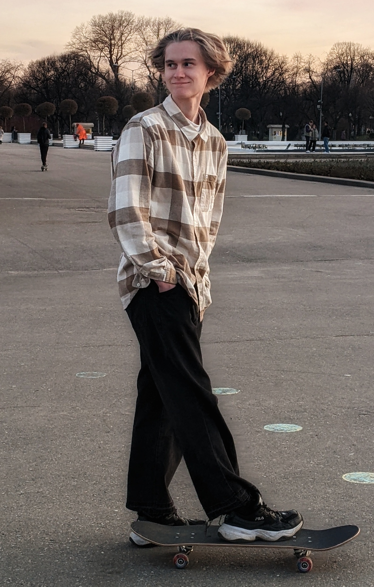

Меня зовут Белый Данила Юрьевич, мне 18 лет. В настоящий момент обучаюсь в «Школе 21» от Сбера и
Московском Политехническом университете на технической специальности. Интересна работа в продуктовых или аутсорсинговых
компаниях, разработка нового функционала или/и поддержание текущих проектов.
Я мечтаю масштабно и нестандартно. Я обладаю решимостью и ответственностью, чтобы преодолевать препятствия на своем пути.
Моя креативность и независимый стиль доводят меня до грани безумства, а иногда и выталкивают из нее. Я знаю, что если ясно
представлю себе цель, то достигну ее. Я полностью контролирую свой успех или неудачу. Я одновременно поддерживаю противоречивые
мысли и оцениваю их с разных точек зрения, ориентируясь между общей картиной и деталями. Мне удобно брать на себя инициативу и
требовать высокого уровня производительности от тех, кто следует за мной. Я вдохновляю людей придерживаться своего видения. Мне
нравится вести ожесточенные дебаты с другими столь же волевыми мыслителями. У меня нет проблем говорить людям то, что я на самом
деле думаю. Я слежу за тем, чтобы мое видение выстояло вопреки сомнениям и оппозиции других. Я мало заинтересован в том, чтобы
вовлекаться в чувства и эмоции других. Я стараюсь изо всех сил не помогать и не поддерживать людей, а скорее ожидать, что они сами
позаботятся о своих собственных потребностях. Моя настойчивость, бескомпромиссность и целеустремленность могут привести к
пренебрежению некоторыми из личных отношений. Я убежден, что люди не отреагируют негативно на мою неослабевающую страсть и стремление
к своему видению.

| C/C++ | Git | Linux | SQL | Bash | Docker |
|---|